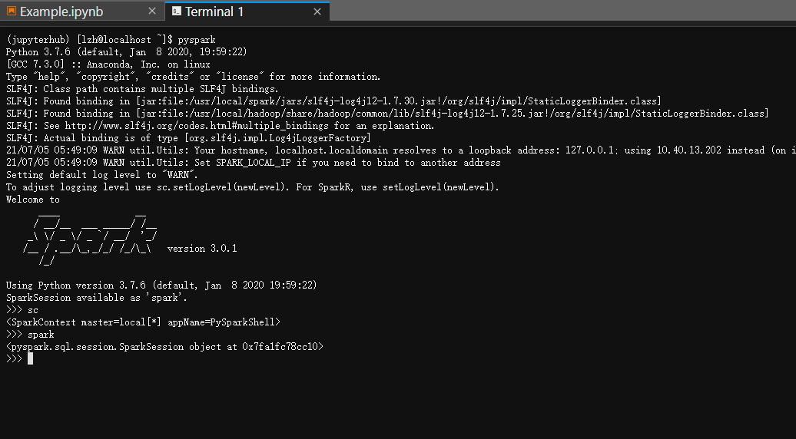

如何在JupyterHub上使用PySpark
PySpark已经安装到jupyterhub环境中，启动一个notebook即可访问
Notebook
jupyterhub默认的python环境中已经安装了PySpark库，无需使用findspark，通过pyspark的API可以自行创建SparkContext和SparkSession。下面给出一个例子
from pyspark.sql import SparkSession
from pyspark import SparkContext
sc = SparkContext('local', '起个任务名字', '/usr/local/spark')
spark = SparkSession(sc)
# 读入hdfs文件
df = spark.read.format('com.databricks.spark.csv') \
.options(header='true', inferschema='true') \
.load("hdfs:///Data/WineData.csv",header=True)
df.show(3)
+-------------+----------------+-----------+--------------+---------+-------------------+--------------------+-------+----+---------+-------+-------+
|fixed acidity|volatile acidity|citric acid|residual sugar|chlorides|free sulfur dioxide|total sulfur dioxide|density| pH|sulphates|alcohol|quality|
+-------------+----------------+-----------+--------------+---------+-------------------+--------------------+-------+----+---------+-------+-------+
| 7.4| 0.7| 0.0| 1.9| 0.076| 11| 34| 0.9978|3.51| 0.56| 9.4| 5|
| 7.8| 0.88| 0.0| 2.6| 0.098| 25| 67| 0.9968| 3.2| 0.68| 9.8| 5|
| 7.8| 0.76| 0.04| 2.3| 0.092| 15| 54| 0.997|3.26| 0.65| 9.8| 5|
+-------------+----------------+-----------+--------------+---------+-------------------+--------------------+-------+----+---------+-------+-------+
only showing top 3 rows
# 读入本地文件
# 先在terminal运行 hdfs dfs -copyToLocal /Data/WineData.csv ~/
# 将hdfs中的文件拷贝到个人目录下
df = spark.read.format('com.databricks.spark.csv') \
.options(header='true', inferschema='true') \
.load("file:///home/lzh/WineData.csv",header=True)
df.printSchema()
root
|-- fixed acidity: double (nullable = true)
|-- volatile acidity: double (nullable = true)
|-- citric acid: double (nullable = true)
|-- residual sugar: double (nullable = true)
|-- chlorides: double (nullable = true)
|-- free sulfur dioxide: integer (nullable = true)
|-- total sulfur dioxide: integer (nullable = true)
|-- density: double (nullable = true)
|-- pH: double (nullable = true)
|-- sulphates: double (nullable = true)
|-- alcohol: double (nullable = true)
|-- quality: integer (nullable = true)
命令行终端
pyspark已经添加到系统路径，启动一个终端，输入pyspark即可
注意：pyspark中自带了名为spark的SparkSession和sc的SparkContext，无需也不能额外创建

使用Ctrl+D退出
spark-submit
用spark-submit提交一个python文件形成独立的作业，请参考官方文档
PySpark入门
最好的方法是上课听讲、多动手写代码、出了问题查官方文档、搜索引擎及StackOverflow等。
以后有必要再补充。